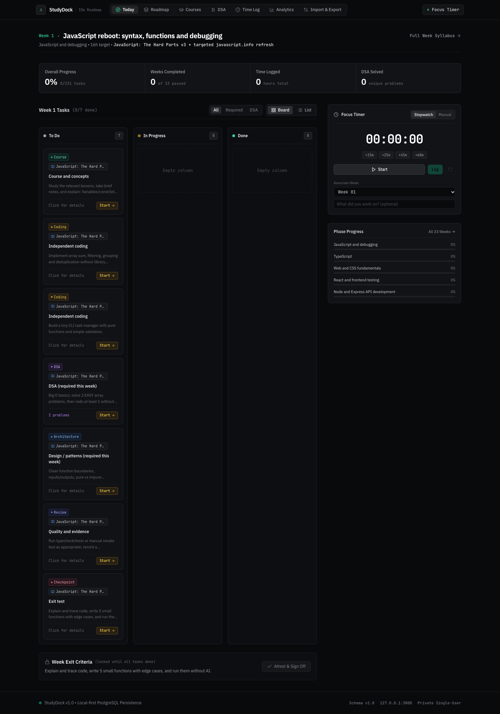
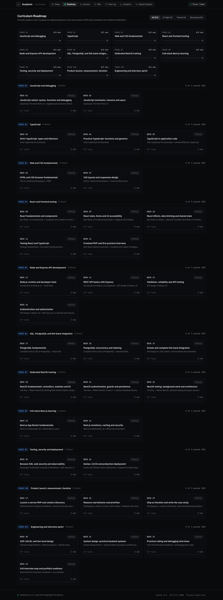
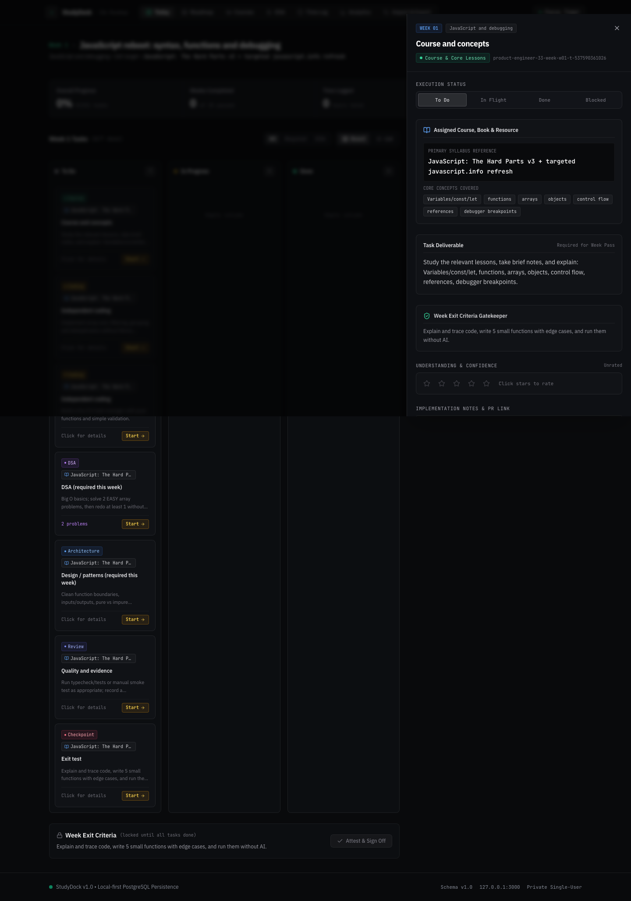

❯
docker compose up -d db
✓ Container studydock-db-1 Started (PostgreSQL 16 healthy on :5432)
❯
pnpm db:migrate && pnpm db:seed
✓ Applied migrations · Seeded 33-week syllabus (231 tasks) + 16 course goals
❯
pnpm dev
▲ Next.js 14.2 · Ready in 150ms on http://127.0.0.1:3000



Study session recorded!
+45 mins logged on Distributed Architecture
StudyDock
Local-first, auditable learning workbench for software engineers.
docker compose up -d db && pnpm dev